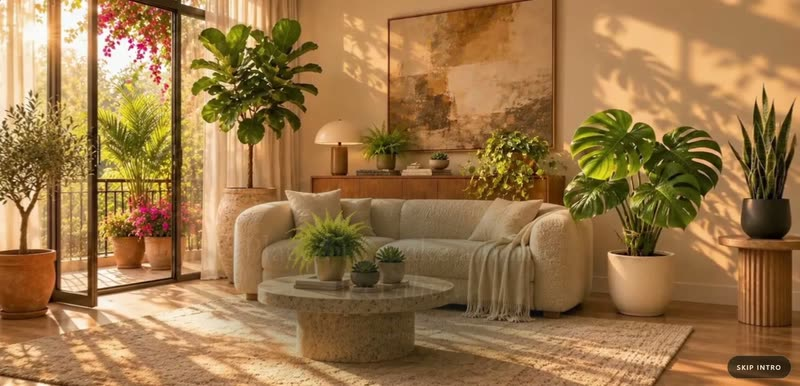
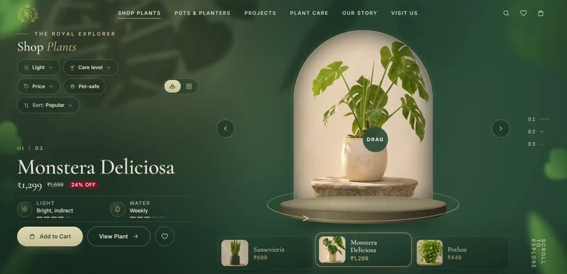

The King's Garden
A pitch demo for a plant nursery that sells plants and styles spaces.
The business and its problem
A plant nursery that sells plants and styles spaces.
It needed to show buyers how plants are grown, cared for and delivered, so they trust ordering online.
My idea
A cinematic film of the nursery's work and 360° plants you can explore.
Key decisions
- Show the care, not just the catalogueThe film follows the daily work ("Misted by hand. Checked leaf by leaf.") so buyers see how their plant is looked after before it arrives.
- Plants you can turn roundEach plant sits under a glass dome you can drag to explore from every side, as if you were standing in the nursery.
- A shop that answers real questionsFilters for light, care level, price and pet-safe plants, with light and watering needs shown on every plant.
- Plants in real roomsStyled spaces show what the plants look like at home, which is the other half of the business.
Stills


